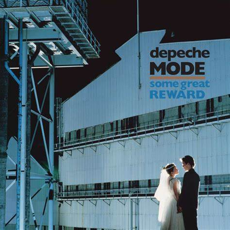

Some Great Reward é um albúm do Depeche Mode lançado como em 1984.
Músicas
Something To Do
Lie To Me
Just Can't Get Enough
See You
The Meaning Of Love
Leave In Silence (Single Version)
Get The Balance Right
Everything Counts
Love In Itself (Single Version)
People Are People
Blasphemous Rumours (1984)
Somebody (1984)
Shake The Disease
It's Called A Heart
Photgraphic (Some Bizzare Version)
Just Can't Get Enough (Schizo Mix)